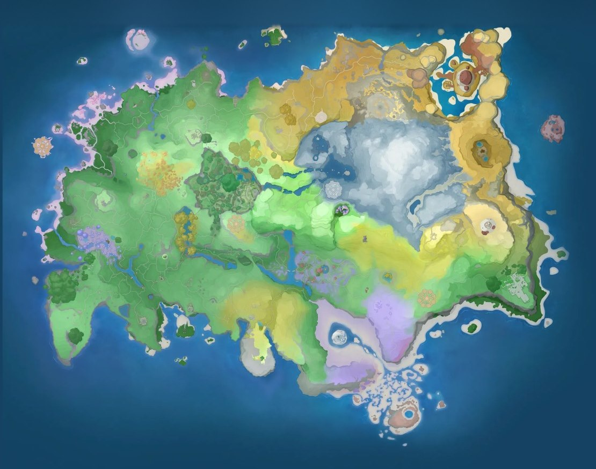

Home首页 / Interactive Map互动地图
Where things are东西在哪
Interactive Map互动地图
The world you can drag and zoom, and beside it every Aniimo the official wiki places in each area — listed by form, because a Budclaw's Bay Form and its basic form do not live on the same coast.一张能拖能缩的世界地图，旁边配上官方维基给每个区域标出的 Aniimo —— 而且是按形态列的，因为花芽蟹的海湾形态和基础形态不住在同一片海岸上。
The world, at whatever size you want it世界，随你想看多大
This is the game's own world map, and all sixteen areas have a pin on it. The pins are placed by eye, and the page says so wherever one opens. The publisher names the areas and says which species live in each one, but it has never published where any of them sits on this image — no outlines, no corner coordinates, no anchor — and neither has anyone else. So we read the terrain against what the names mean and marked our guess. What is not a guess is what a pin holds: which species live in that area, in which form, read off the official wiki.这是游戏自己的世界地图，十六个区域现在各有一枚钉子。钉子的位置是估的，每一枚打开时都会写明这一点。 官方把区域名字给了出来，也说清了每种 Aniimo 住在哪片地方，但从来没公布过它们落在这张图的什么位置 —— 没有边界线，没有角点坐标，没有锚点。别人也没有。于是我们照着地貌去对名字的意思，把估的位置标了上去。不是估的那部分，是钉子底下装的东西：那片地方住着哪些物种、各是哪个形态，出自官方维基。

1×
Position estimated · species list from the official wiki位置为估测 · 物种清单出自官方维基
Drag to pan · click the map, then scroll or pinch to zoom · search beside the map, or right-click it to drop a marker of your own拖动平移 · 点一下地图，再用滚轮或双指缩放 · 在地图旁边搜索，或右键地图插一枚自己的标
Beast Fang Ridge狼牙岭
18Emberpup小炭犬 · Basic Form基础形态 Emberpup小炭犬 · Mountain Woods Form山林形态 Flameruff焚火狼 · Basic Form基础形态 Flameruff焚火狼 · Mountain Woods Form山林形态 Scorchhowl狼斗士 · Basic Form基础形态 Scorchhowl狼斗士 · Thunderstorm Form雷雨形态 Scorchhowl狼斗士 · Prismana Form虹光形态 Chirpi口哨鸥 · Basic Form基础形态 Iris飘飘花 · Mountain Woods Form山林形态 Budclaw花芽蟹 · Basic Form基础形态 Sparki幽幽焰 · Basic Form基础形态 Flamerion幻焰灵 · Basic Form基础形态 Flutternym荧粉蝶 · Mountain Woods Form山林形态 Gracewing幻翼蝶 · Mountain Woods Form山林形态 Pomegg拉拉蛋 · Highland Form高地形态 Bonesky冰骨崽 · Basic Form基础形态 Fenrier冰刃狼 · Basic Form基础形态 Glynsera霜锋狼 · Basic Form基础形态
Berylline Causeway青石台
16Iris飘飘花 · Mountain Woods Form山林形态 Irisal花舞兰 · Mountain Woods Form山林形态 Hummin走调草 · Mountain Form山地形态 Witchin巫帽草 · Mountain Form山地形态 Budclaw花芽蟹 · Basic Form基础形态 Shrubclaw蟹葱葱 · Basic Form基础形态 Sparki幽幽焰 · Highland Form高地形态 Sparki幽幽焰 · Forest Form森林形态 Flamerion幻焰灵 · Highland Form高地形态 Flamerion幻焰灵 · Forest Form森林形态 Wisptis幽爪镰 · Basic Form基础形态 Ignitis淬刃螳螂 · Basic Form基础形态 Ignitis淬刃螳螂 · Prismana Form虹光形态 Baleetle滚滚郎 · Basic Form基础形态 Waleetle摩托郎 · Basic Form基础形态 Bouldus岩球郎 · Basic Form基础形态
Blitzwood闪电之森
16Chirpi口哨鸥 · Basic Form基础形态 Iris飘飘花 · Grassland Form草原形态 Irisal花舞兰 · Grassland Form草原形态 Hummin走调草 · Basic Form基础形态 Sparki幽幽焰 · Basic Form基础形态 Flutternym荧粉蝶 · Basic Form基础形态 Flutternym荧粉蝶 · Mountain Woods Form山林形态 Gracewing幻翼蝶 · Mountain Woods Form山林形态 Wisptis幽爪镰 · Highland Form高地形态 Ignitis淬刃螳螂 · Highland Form高地形态 Bolty闪电貂 · Basic Form基础形态 Bolty闪电貂 · Mountain Woods Form山林形态 Blazen雷光貂 · Basic Form基础形态 Blazen雷光貂 · Prismana Form虹光形态 Squarrel击拳尾 · Basic Form基础形态 Squashel烈拳尾 · Basic Form基础形态
Driftwise Meadow雪麓草甸
15Iris飘飘花 · Plateau Form高原形态 Irisal花舞兰 · Plateau Form高原形态 Skippy莲顶鱼 · Snowfield Form雪地形态 Pranky顽皮鱼 · Snowfield Form雪地形态 Glacy莹冰龙 · Snowfield Form雪地形态 Glacy莹冰龙 · Prismana Form虹光形态 Nimbi云朵羊 · Plateau Form高原形态 Turbo蓬蓬羊 · Plateau Form高原形态 Sparki幽幽焰 · Forest Form森林形态 Flamerion幻焰灵 · Forest Form森林形态 Pomegg拉拉蛋 · Snowfield Form雪地形态 Bonesky冰骨崽 · Basic Form基础形态 Fenrier冰刃狼 · Basic Form基础形态 Fentuft天使耶 · Basic Form基础形态 Fenmane疾雷耶 · Basic Form基础形态
Echoback Landing鲸落浅滩
16Emberpup小炭犬 · Basic Form基础形态 Flameruff焚火狼 · Basic Form基础形态 Celestis星乐蒂 · Basic Form基础形态 Chirpi口哨鸥 · Beach Form沙滩形态 Cornet小号鸥 · Beach Form沙滩形态 Tubster大号鸥 · Beach Form沙滩形态 Budclaw花芽蟹 · Beach Form沙滩形态 Shrubclaw蟹葱葱 · Beach Form沙滩形态 Susuta羞羞獭 · Basic Form基础形态 Susuta羞羞獭 · Nighttime Form夜晚形态 Popota泡泡獭 · Basic Form基础形态 Panpanta胖胖獭 · Basic Form基础形态 Panpanta胖胖獭 · Prismana Form虹光形态 Shelly贝壳星 · Basic Form基础形态 Sheldon智多星 · Basic Form基础形态 Sherro星骑士 · Thunderstorm Form雷雨形态
Forest of Falling Stars星落林
15Celestis星乐蒂 · Basic Form基础形态 Stellarys星魔师 · Basic Form基础形态 Stellarys星魔师 · Rainstorm Form雨天形态 Stellarys星魔师 · Prismana Form虹光形态 Chirpi口哨鸥 · Beach Form沙滩形态 Tromber长号鸥 · Beach Form沙滩形态 Cornet小号鸥 · Beach Form沙滩形态 Iris飘飘花 · Forest Form森林形态 Irisal花舞兰 · Forest Form森林形态 Skippy莲顶鱼 · Basic Form基础形态 Pranky顽皮鱼 · Basic Form基础形态 Hummin走调草 · Basic Form基础形态 Eko大耳蝠 · Basic Form基础形态 Eklue侦探蝠 · Basic Form基础形态 Pomegg拉拉蛋 · Sea of Flowers Form花海形态
Nimbus Fields云上草原
17Emberpup小炭犬 · Basic Form基础形态 Flameruff焚火狼 · Basic Form基础形态 Celestis星乐蒂 · Basic Form基础形态 Chirpi口哨鸥 · Basic Form基础形态 Iris飘飘花 · Grassland Form草原形态 Skippy莲顶鱼 · Basic Form基础形态 Pranky顽皮鱼 · Basic Form基础形态 Nimbi云朵羊 · Basic Form基础形态 Nimbi云朵羊 · Rainstorm Form雨天形态 Nimbi云朵羊 · Cloudmist Form云海形态 Turbo蓬蓬羊 · Basic Form基础形态 Turbo蓬蓬羊 · Rainstorm Form雨天形态 Turbo蓬蓬羊 · Prismana Form虹光形态 Hummin走调草 · Basic Form基础形态 Budclaw花芽蟹 · Basic Form基础形态 Sparki幽幽焰 · Basic Form基础形态 Flutternym荧粉蝶 · Basic Form基础形态
Rosetower Woods玫瑰塔林
14Budsquire小哭苞 · Basic Form基础形态 Budsquire小哭苞 · Towerwood Form塔林形态 Thornblade刺剑玫 · Towerwood Form塔林形态 Melloblum魅乐薇 · Basic Form基础形态 Pomegg拉拉蛋 · Basic Form基础形态 Pomegg拉拉蛋 · Snowfield Form雪地形态 Pomawk吼尾蜥 · Basic Form基础形态 Dewy采蜜鸟 · Basic Form基础形态 Bonesky冰骨崽 · Nighttime Form夜晚形态 Fenrier冰刃狼 · Nighttime Form夜晚形态 Glynsera霜锋狼 · Nighttime Form夜晚形态 Cubbo迷梦崽 · Basic Form基础形态 Grizbo暴睡熊 · Basic Form基础形态 Grizbo暴睡熊 · Prismana Form虹光形态
Russet Highlands丹岩高地
22Emberpup小炭犬 · Highland Form高地形态 Flameruff焚火狼 · Highland Form高地形态 Chirpi口哨鸥 · Highland Form高地形态 Tubster大号鸥 · Highland Form高地形态 Iris飘飘花 · Highland Form高地形态 Irisal花舞兰 · Highland Form高地形态 Sparki幽幽焰 · Highland Form高地形态 Baleetle滚滚郎 · Snowfield Form雪地形态 Waleetle摩托郎 · Snowfield Form雪地形态 Helmut大眼盔 · Basic Form基础形态 Helmut大眼盔 · Snowfield Form雪地形态 Helmut大眼盔 · Mountain Woods Form山林形态 Pawney盔勇士 · Prismana Form虹光形态 Rookey盔卫士 · Basic Form基础形态 Rookey盔卫士 · Snowfield Form雪地形态 Rookey盔卫士 · Mountain Woods Form山林形态 Jawling钢颚仔 · Basic Form基础形态 Jawling钢颚仔 · Mountain Form山地形态 Helmwhelp盔面龙 · Basic Form基础形态 Helmwhelp盔面龙 · Mountain Form山地形态 Helgon银盔龙 · Basic Form基础形态 Helgon银盔龙 · Mountain Form山地形态
Sea of Flowers鸢尾花海
17Iris飘飘花 · Basic Form基础形态 Irisal花舞兰 · Basic Form基础形态 Skippy莲顶鱼 · Sea of Flowers Form花海形态 Pranky顽皮鱼 · Sea of Flowers Form花海形态 Glacy莹冰龙 · Sea of Flowers Form花海形态 Hummin走调草 · Mountain Form山地形态 Witchin巫帽草 · Mountain Form山地形态 Sparki幽幽焰 · Sea of Flowers Form花海形态 Flutternym荧粉蝶 · Basic Form基础形态 Flutternym荧粉蝶 · Sea of Flowers Form花海形态 Flutternym荧粉蝶 · Nighttime Form夜晚形态 Budsquire小哭苞 · Basic Form基础形态 Thornblade刺剑玫 · Basic Form基础形态 Thornblade刺剑玫 · Thunderstorm Form雷雨形态 Thornblade刺剑玫 · Prismana Form虹光形态 Dewy采蜜鸟 · Basic Form基础形态 Fragrancier香氛鸟 · Basic Form基础形态
The Argent Strait鸥鸣湾
13Emberpup小炭犬 · Basic Form基础形态 Flameruff焚火狼 · Basic Form基础形态 Celestis星乐蒂 · Basic Form基础形态 Chirpi口哨鸥 · Basic Form基础形态 Tromber长号鸥 · Basic Form基础形态 Cornet小号鸥 · Basic Form基础形态 Cornet小号鸥 · Prismana Form虹光形态 Tubster大号鸥 · Basic Form基础形态 Iris飘飘花 · Grassland Form草原形态 Nimbi云朵羊 · Basic Form基础形态 Hummin走调草 · Basic Form基础形态 Budclaw花芽蟹 · Bay Form海湾形态 Shrubclaw蟹葱葱 · Bay Form海湾形态
The Mistwoods迷雾森林
13Emberpup小炭犬 · Basic Form基础形态 Iris飘飘花 · Grassland Form草原形态 Skippy莲顶鱼 · Basic Form基础形态 Pranky顽皮鱼 · Basic Form基础形态 Leafy莲冠龙 · Basic Form基础形态 Hummin走调草 · Basic Form基础形态 Witchin巫帽草 · Basic Form基础形态 Witchin巫帽草 · Prismana Form虹光形态 Sparki幽幽焰 · Forest Form森林形态 Flamerion幻焰灵 · Forest Form森林形态 Flutternym荧粉蝶 · Basic Form基础形态 Wisptis幽爪镰 · Forest Form森林形态 Ignitis淬刃螳螂 · Forest Form森林形态
Tideblossom Coast潮花岸
10Budclaw花芽蟹 · Mudflat Form滩涂形态 Shrubclaw蟹葱葱 · Mudflat Form滩涂形态 Pomegg拉拉蛋 · Sea of Flowers Form花海形态 Bulbly灯泡水母 · Basic Form基础形态 Veilfloat灯纱水母 · Basic Form基础形态 Luminelle吊灯水母 · Basic Form基础形态 Luminelle吊灯水母 · Rainstorm Form雨天形态 Luminelle吊灯水母 · Prismana Form虹光形态 Fahloo浴球鸟 · Basic Form基础形态 Erlath沐羽鸟 · Basic Form基础形态
Zephyrus Landbridge海角丘谷
16Emberpup小炭犬 · Highland Form高地形态 Flameruff焚火狼 · Highland Form高地形态 Chirpi口哨鸥 · Highland Form高地形态 Tromber长号鸥 · Highland Form高地形态 Cornet小号鸥 · Highland Form高地形态 Tubster大号鸥 · Highland Form高地形态 Budclaw花芽蟹 · Basic Form基础形态 Pomegg拉拉蛋 · Highland Form高地形态 Wisptis幽爪镰 · Highland Form高地形态 Ignitis淬刃螳螂 · Highland Form高地形态 Pebbling碎岩仔 · Basic Form基础形态 Lavazar炽岩龙 · Basic Form基础形态 Magmarex熔岩暴龙 · Basic Form基础形态 Magmarex熔岩暴龙 · Prismana Form虹光形态 Cozite烟囱蚁 · Basic Form基础形态 Bailite土堡蚁 · Basic Form基础形态
夕阳海原
1Shelly贝壳星 · Basic Form基础形态
新月海湾
1Shelly贝壳星 · Basic Form基础形态
How to get the actual spawn points真正的刷新点怎么拿
Better than ours would have been, and it is built into the game. Once you have caught one, the game will mark every spawn point it knows for you:比我们自己画要好，而且游戏里就有。只要你抓到了一只，游戏就会把该物种已知的刷新点全给你标出来：
- Open a species you have caught打开一只你已经抓到的 Aniimo — Any Aniimo in your collection, not one you have only seen.是你图鉴里抓到的，不是只见过一面的。
- Choose Habitats选「栖息地」 — The map then marks each known spawn point for that species with a yellow square. It is the game's own data on the game's own map, and it is per form — so it shows the Bay Form's shallows separately from the basic form's ridge.地图上会用黄色方块标出该物种每一个已知刷新点。这是游戏自己的数据画在游戏自己的图上，而且是按形态分的 —— 海湾形态的浅滩和基础形态的山脊会分开显示。
- Read your own coordinates读你自己的坐标 — Your position is shown as coordinates on the map screen as you move, so you can check a spot against any guide's numbers without another tool.你在移动时，地图界面会实时显示所在坐标，所以不用额外工具就能拿它去对任何攻略上的数字。
- Drop a pin and ride over插个标，飞过去 — Coordinates in guides are the same numbers your map screen shows. Open the map, drop a pin on them, and travel to it.攻略里写的坐标和你地图界面上的数字是同一套。打开地图，把标插上去，然后过去。
A coordinate is two four-digit numbers. The first carries a sign, so points west of the origin are negative; the second is zero-padded, so it keeps its leading zeros rather than shrinking to three digits. A spot on the Argent Strait coast reads like this:一个坐标是两个四位数。前一个带符号，所以原点以西是负数；后一个补零，不会因为只有三位就缩掉前面的零。鸥鸣湾海边的一个点长这样：
-1241, 0566
That last step is the honest version of what a pin map does. We could draw you a marker; the game will draw you a better one, and it will be right.最后一步才是「钉点地图」本来该做的事。我们能给你画一个标记；游戏会给你画一个更好的，而且它是对的。
The six named regions六个有名字的地区
The official site's front page presents six regions by name, in both languages. They are the publisher's own words, printed here as published:官网首页分别用两种语言列出了六个地区。这里是官方自己的说法，照原样抄下：
Nimbus Fields
云上草原
The Mistwoods
迷雾森林
Echoback Landing
鲸落浅滩
Sea of Flowers
鸢尾花海
Blitzwood
闪电之森
Forest of Falling Stars
星落林
These six are not the sixteen areas above. The front page names regions; the wiki tags habitats, and its list is longer and finer. The two lists overlap — Nimbus Fields, the Mistwoods, Echoback Landing, Sea of Flowers, Blitzwood and Forest of Falling Stars appear on both — but nothing published reconciles them, so this page does not either. They are two publisher-endorsed axes, and only one of them is attached to species.这六个和上面十六个区域不是一回事。 首页给的是「地区」，维基标的是「栖息地」，后者的清单更长也更细。两份名单有重合 —— 云上草原、迷雾森林、鲸落浅滩、鸢尾花海、闪电之森、星落林两边都有 —— 但没有任何公开资料把两者对齐过，所以这一页也不去对齐。它们是官方认可的两条轴，而只有一条和物种挂上了钩。